English manual
With this program you are able to analyze the variability of your heart or those others. As a user you have all relevant parameters and your measured data at one glance. In the following you got to know the program in detail. The English video tutorial ist starting with 'How to get started' and an explaination of the interface and usage:
Content
Supported File Types
.hrv File of the program ***
.mat Data as a vector of a *.mat-file using Matlab/Octave.
.ecg Annotations in Physionet format.
.csv A text file with RR intervals or raw data (waveform).
.hrm Standard format of heart rate devices of Polar.
.wav Binary format of the ECG using Hexoskin Smart Shirts.
.edf European Data Format.
.acq BIOPAC ACQ data.
Please make sure to activate the recording of RR intervals if you use Polar watches (e.g. RS800CX/CS600X/V800). Not every device has such capacity.
To generate a binary export of the raw data using Hexoskin smart shirts, please read the support article.
For all formats except .hrm and .wav you will be questioned about the sampling frequency and whether your data contains the waveform or RR intervals.
The Interface
The user interface gives you an easy-to-use operating surface which is divided in five parts.

- In the upper panel of the program you have the graphics of RR intervals with options for labeling, filtering and display.
- On the left you have all common parameters for HRV analysis.
- In the middle you have the graphics of successive intervals.
- On the right your data is represented in the Tachogram and Spectrogram.
- In the lower panel you see the chronological sequence of heart rates and local HRV parameters on the left. To its right there is the scatterplot of all RR intervals (predecessor vs. successor) - also known as Poincaré Plot. There you can easily detect and remove artifacts.
The central panel has three sections:
Menu bar
- Open a new data set
- Save settings of the current data set (incl. artifacts, labeling etc.)
- Zoom in (draw a window around the desired region to zoom in)
- Zoom out
- Move (hold down the left mouse button to move the plot)
- Data Tooltip (select a point in a plot to get the coordinates)
- Marker (You can highlight points and lines in a plot)
- Copy to clipboard (copies HRV measures to clipboard)
- Settings (adjust font and font size)
- Labeling (enter a name for the data set)
Upper Panel (1)
RR Interval Options
The upper panel contains the time series with its waveform or the impulse function of R peaks (heart beats).
Here you have the following options:
-
The choice to view a particular time interval:
Therefor you use this edit field to enter the desired period for which you want to see the heart rates. The input is in seconds separated by a colon (SS:SS). Alternatively, time displayed as hours, minutes and seconds is also accepted (HH:MM:SS..HH:MM:SS). - You are able to move forward or backwards using the buttons . A left click on the single arrow moves to the following time period. The fast forward arrow skips 5 intervals.
- Left to the field of the time period you see an empty edit field .
The function of that field is to give an individual name to the selected time period. This label may contain additional information.
If you are writing into it, the interval will be labeled with its name.
The labeling also appears in the middle ("HRV measures") and lower panel ("Continuous HRV parameter"):
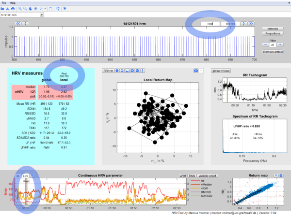
- Use the buttons und 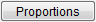 to show the intervals between the beats and to show corresponding proportions. Click again to hide.
- You can control the filtering of artifacts using this options . You can increase or decrease the degree of filtering. The less the value, the more strictly is the performed filtering and the more artifacts are removed. You can deactivate the filtering by typing "NaN" in the edit field .
-
Misplaced R peaks which may occur during the QRS detection or other disturbing artifacts can optionally be removed from the analysis.
To do so please use the button 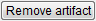.
The cursor changes to a cross and you are able to select one or more R peaks (heart beats) in the time series.
Select a R peak with a left click and confirm the last peak with a double click.
Removed R peaks are marked with a small cross "X". In the same way you can restore removed peaks:
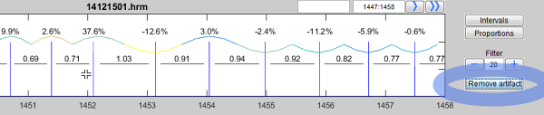

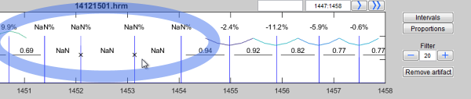
Central Part (2,3,4)
HRV Measures (2)
HRV measures represent the Heart Rate Variability.
The results of the analyzed data splits into a rose and green shaped area. The highlighted rose shaped area contains parameters of the Heart Rate Variability (HRV) by using relative RR intervals/ proportions of RR intervals (see 3). All other measures are the common measurands of variability which are recommended in the guidelines of 1996 of the "Task Force of The European Society of Cardiology and The North American Society of Pacing and Electrophysiology". The global column shows the calculated measurands of the whole data set. The local column shows the calculated measurands of the current time period. The period in seconds is shown in italics.
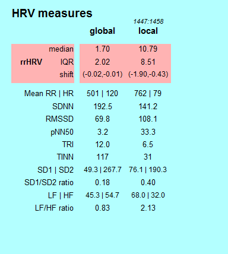
Local Return Map (3)
In the Local Return Map relative or absolute RR intervals are displayed in a scatter plot. Every point corresponds to a pair of successive intervals.
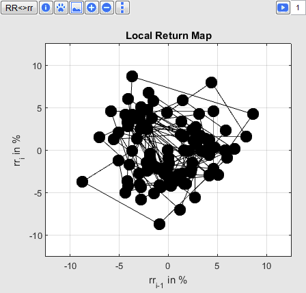
The position of the points illustrates the variability of RR intervals of the currently selected period. It's simple to change the view:
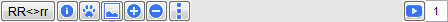
- Button 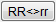 changes between absolute (RR intervals in seconds) and relative values (rr intervals in percent).
- Button for consecutively numbering of the points.
- Button (Footprint) to save the scatter cloud and its HRV parameters for comparison with other time periods. Corresponding parameters are shown in a third column. The scatter plot of the footprint is shown in gray to give the possibility to compare two time periods directly.
- Button to show on the lower left the kernel density function from the distance of the scatter cloud to its coordinate center. Furthermore the median and inter quartile range (IQR) are shown.
- Buttons to change the size of points.
- Button to change the line type. Every pressing of the button the line type varies, as soon as the original type is selected.
- Button starts an animation of the variability and the edit field sets the animation speed. The number specifies the factor for which the animation runs. "1" means real time, "2" means double speed.
Tachogram und Spectrum (4)
On the far right of the middle panel you will see the "RR-Tachogram" and the "Spectrum of RR-Tachogram".
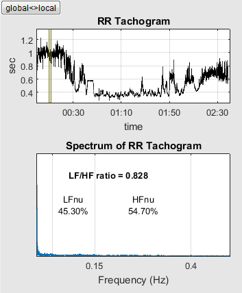
The RR-Tachogram represents the RR intervals in dependence to its time. The local view provides information about the current time period. The global view shows the complete time period.
In the Frequency spectrum the interpolated RR-Tachogram will be decomposed into sine waves of different frequencies. The spectrum maps the weights of those sine waves. It becomes clear to the user, which frequency components outweigh during the RR measurement.
Both units have a global and a local view which can be switched by button 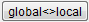. The global view shows the spectrum of the unfiltered RR intervals.
Lower Panel (5)
On the left you see how the local HRV measures vary in time. On the right you see the return map or Poincaré Plot of the absolute RR intervals.
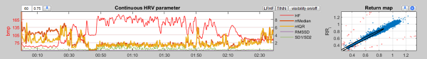
In the section Continuous HRV parameter you see chronologically plotted the local HRV measures of the last 60 heart beats. The number of heart beats which will be considered during the local calculation can be edited here 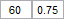. The second parameter characterizes the overlap area. Because you may consider that the local measures are not computed for all possible time points. This saves computing time. A value of 0 means that the local measures will be computed for all 60th values (to the 60th, 120th, 180th time point, always on basis of the last known 60 beats).
Use the possibility of the picker to select and view a time period with a labeling.
A click on 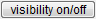 turns the cursor into a cross.
Then you can select some of the parameters below. Confirm with a double click to hide or display selected curves. Use the buttons 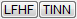 to display these parameters.
Those calculations a more time consuming and therefore not computed by default.
In the Return map the absolute RR intervals of the whole time series are shown in a scatter plot.
Blue points are considered for HRV evaluation. Orange points represents outlier and were classified by the automatic filtering - corresponding intervals replaced with "NaN".
Using the picker an arbitrary point can be selected in the scatter point in order to jump to its corresponding section of the time series:
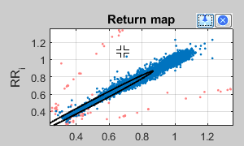 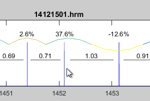
Use the symbol to mark some coordinates, which disturbs in your opinion your analysis. After a double click these were marked as outlier, removed from analysis and marked with a "X" in the time series view (upper panel).
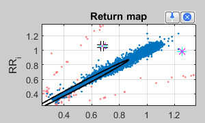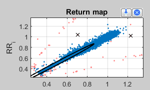 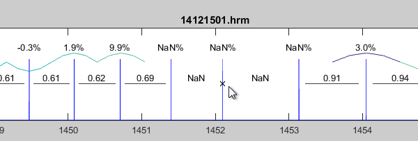
Filtering
This section is about the automatic filtering of artifacts and will be described more concrete and understandable soon. Please be patient.
There are basically two rules to filter artifacts from a series of RR intervals.
- The first rule relates to missing R peaks in the time series.
Consider a fixed limit of 50% (+50%; -50%) unless there is higher value defined in the edit field. If the difference of consecutive relative RR intervals exceeds this limit, a missing peak is detected the involved RR interval will be replaced with "NaN".
- The second rule applies in cases for which R peaks are misplaced.
The second rule applies when two consecutive relative RR intervals are too contrary to each other. This means that the change of heart rates takes place too promptly (physiologically not to explain). The limit is determined in the edit field .
This manual was created with Ali Mourad.